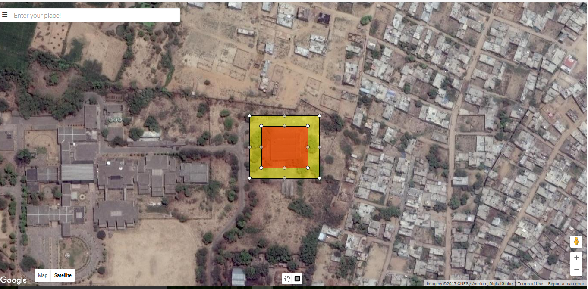
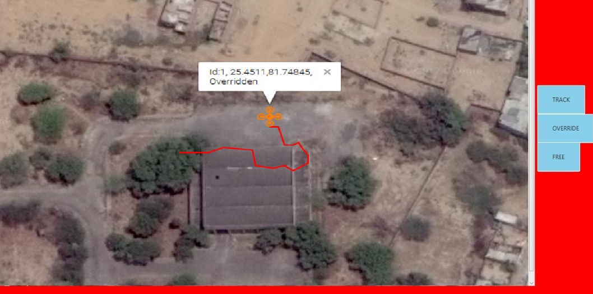

Airport Authority of India put forward a problem statement under SIH 2017 to develop a technology that would help restrict the entry of drones in areas defined as restricted by the Ministry of Civil Aviation. I was the team leader of the team , that proposed the development of Geo-Fencing Box(GFB), which was a hardware system which when installed on a drone continuously checks for intrusion and overrides the Drone just as an intrusion occurs in any of the restricted areas. Our solution went on to win the first prize in the event.
In 2017, the Government of India, organized the Smart India Hackathon (SIH) for the first time. 30 different Ministries under the Government of India released problem statements and asked students to come up with solutions to these problems. The competition attracted over 10,000 students and was the largest of its kind.
GFB uses Dual-Security mechanisms based on 2 technologies, namely GPS and RF to achieve the defined objective. Each of which is discussed below:-
The whole of Indian landmass is divided into 3 zones :-
Red - No Flying Zone.
Yellow - Notification Zone to alert the user of the close proximity of a restricted area (i.e. Red Zone). This zone behaves as a margin for the enclosed red zone.
Green - Safe Flying Zone.
The creation of these zones is done using a simplistic user interface (Zone Selector) developed wherein the authorities can select and define any region into any of the 2 categories (red or yellow) simply with the drag of a mouse. All other areas are considered as green zones.
A snapshot of the zone selector interface is shown below.

While the GPS technique is good for creating a static fence, what if the restricted zone is also in motion. This type of situation may arise when a highly designated authority such as the President or the Prime Minister’s convoy is on the move. To tackle this problem we make use of the RF technology. If any drone enters these RF zones, the drone would automatically start sending the whereabouts of its location and drone id which would be made visible to the authorities at place. For this, a simple interface is developed, which shows the position of all flying drones in the RF range on Map and also the override controls of the specific drones are also present. The RF interface is shown below: 
The efficacy of the mechanism proposed was demonstrated on the drone that we built earlier. A post on the same in available here. The jury were able to disengage the quadcopter everytime the quadcopter entered the region they defined using the web interface or by simple detecting it on the RF interface and then clicking the override button. Also the exact position of the quadcopter and its unique id was visible on the interface. The fact that all the processing was done using an ATmega328P IC meant that the solution proposed was cost effective and hence, could be deployed in real-world systems.